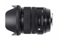

器材库 > 35mm画幅AF变焦镜头 > DG 24-70/2.8 OS HSM Art

详细规格
镜头类型
标准变焦镜头
发布日期
2017-02-21
最大光圈
f/2.8
最小光圈
f/22
视角（对角）
84.1° - 34.3°
镜头结构
19片/14组
非球面镜片
4片
低/超低色散镜片
3片
光圈叶片
9片
最近对焦距离
37cm
最大放大倍率
1:4.8
驱动马达
HSM（超声波马达）
滤镜口径
82mm
镜头卡口
Canon EF, Nikon F, Sigma SA
防抖
是
颜色
黑色
尺寸
88×107.6mm
附件
镜头包，遮光罩 LH876-04
匿名网友2017-12-09 13:064.75 分
操作性 5.00耐用性 5.00性价比 4.00解像力 5.00色彩还原 5.00机械结构 4.50
产品图 / 样片
DG 24-70/2.8 OS HSM Art